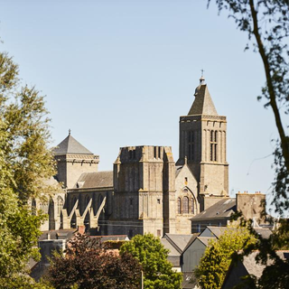

Visiter Saint-Malo, la Cité Corsaire de Bretagne, est sans conteste l’un des incontournables à visiter en Bretagne. Ses remparts, ses plages, ses lieux accessibles uniquement à marée basse et son centre-ville habillé de ruelles pavées, sont autant de raisons qui font de Saint-Malo un lieu à visiter. Saint-Malo, c’est un petit havre de paix, idéalement situé en Bretagne, qui vous charmera à coup sûr. Afin de prendre un peu de hauteur et découvrir la ville, je vous invite à débuter votre visite de Saint-Malo par une balade sur les remparts. Faisant le tour de la ville intra-muros, les remparts ont été épargnés par les bombardements et sont donc d’origine, soit du XII ème siècle. Le point de vue depuis ces remparts est époustouflant : aussi bien la baie de Saint-Malo avec Dinard au loin, que l’intérieur de la ville et ses petites ruelles, mais aussi son port et sa plage au loin. Selon si votre promenade se fait à marée haute ou à marée basse, vous pourrez admirer des paysages totalement différents. Différents points d’accès le long des remparts vous permettent de rejoindre le haut. Pour faire le tour, comptez entre 1h30 et 2 heures. Il vous est tout à fait possible de descendre et remonter plus loin ou plus tard, vous n’êtes pas obligé de faire l’ensemble du tour d’une seule traite.
★
Lorsque la marée se retire, il est temps d'explorer les célèbres plages de la ville et les îles environnantes. Des chaussées exposées permettent de marcher jusqu'aux îles de marée du Grand Bé et du Petit Bé, la première étant le lieu de repos de l'homme politique et écrivain romantique français Chateaubriand, et la seconde abritant un fort bien conservé. Une visite au Mont Saint-Michel à proximité est également fortement recommandée, avec des bus partant tous les jours de Saint-Malo .
★★
Les deux grandes destinations touristiques de la région que sont le Mont-Saint-Michel et Saint-Malo ne doivent pas occulter toutes les autres richesses des villes de Dinan, Dol, Combourg, Avranches, Granville, Cap Fréhel… Le tourisme c`est d`abord les visiteurs, ils doivent avoir envie de rester, de consommer, de découvrir, de développer l`itinérance au sein de cette nouvelle destination.
★★★
Créée en 1978 par Michel Etevenon, La Route du Rhum-Destination Guadeloupe est la reine des courses transatlantiques en solitaire. Depuis 44 ans, elle relie Saint-Malo en Bretagne à Pointe-à-Pitre en Guadeloupe, et regroupe sur une même ligne de départ le plus grand plateau de la voile océanique.